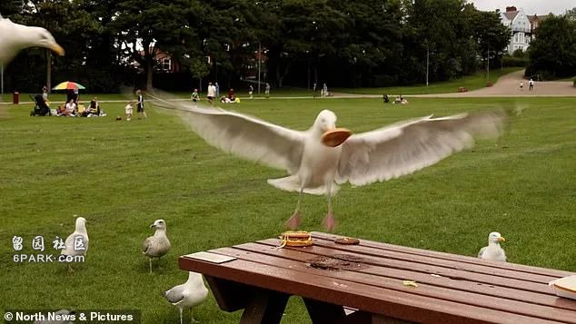
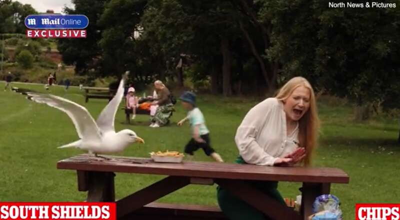
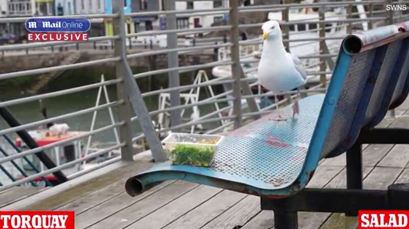
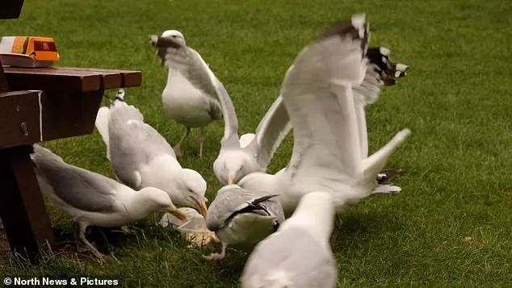
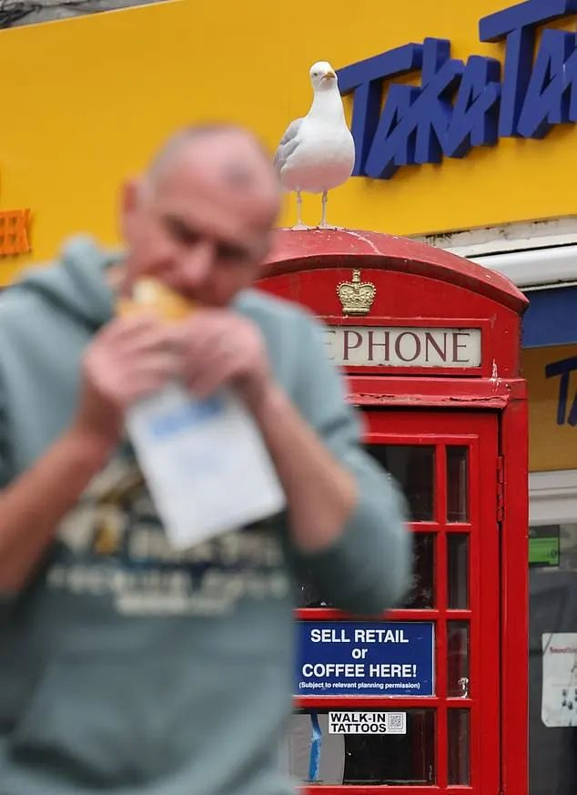
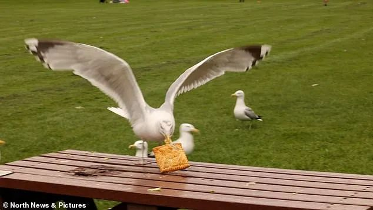
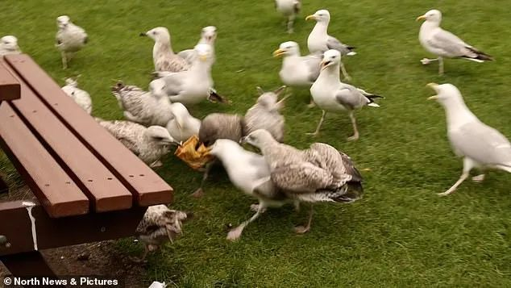
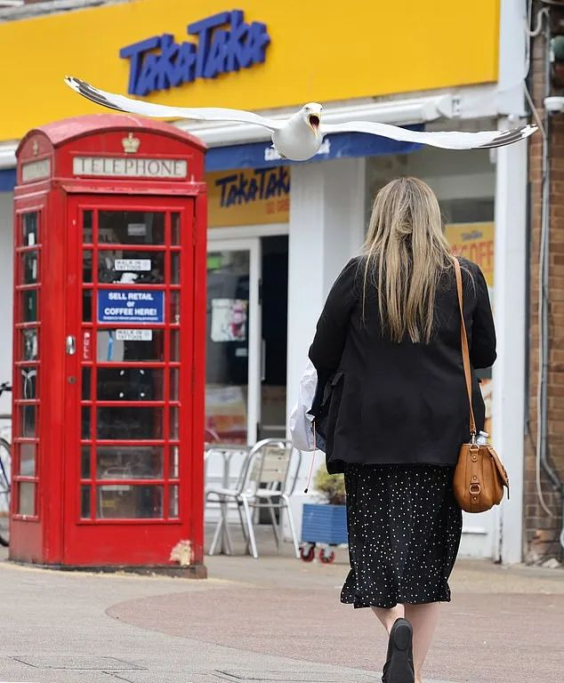
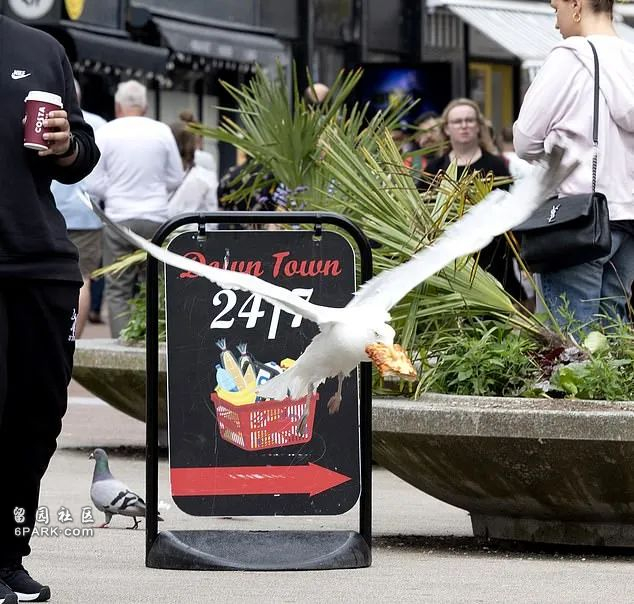
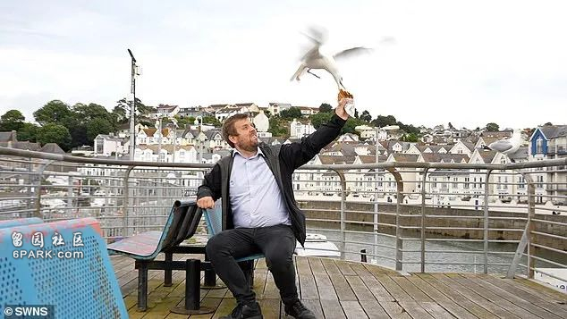

近日，英国各地海滩频传游客遭遇海鸥”打劫”的新闻，这些”飞天大盗”的胆子越来越大，口味也越来越刁钻。
为了揭秘海鸥的”最爱”美食，英国《每日邮报》派出了一支勇敢的”美食侦探”小队，他们带着各种食物，冒着被海鸥”群殴”的风险，深入虎穴一探究竟。

这支”美食侦探”小队横跨英格兰南北，从德文郡的托基到多塞特郡的伯恩茅斯，再到南泰恩赛德的南希尔兹，他们带着麦当劳、格雷格斯面包店、乐购超市的食品，以及传统的炸鱼薯条，展开了一场惊心动魄的”海鸥美食大赏”。
结果显示，海鸥们对格雷格斯面包店的牛排面包情有独钟。在托基，这些”空中土匪”仅用了18秒就将牛排面包抢走，速度之快令人咂舌，比抢夺传统最爱的炸鱼薯条快了整整7倍！看来，海鸥界也流行起了”快餐文化”。

而在南希尔兹，海鸥们更是凶猛，仅用2秒就抢走了记者手中的薯条。这群”空中大盗”的战斗力之强，让记者不得不落荒而逃。在海鸥眼中，人类就是一群送外卖的”快递小哥”。有趣的是，虽然麦当劳的巨无霸汉堡在全球每天能卖出250万个，但在海鸥界却不太受欢迎。在托基，海鸥们花了整整3分半钟才敢来啄一口。避雷了！海鸥界也有自己的”米其林指南”。
最让人意外的是，乐购超市的虾仁沙拉竟然成了”最安全”的选择。在托基，这盘沙拉安然无恙地度过了36分钟，只有在无人看管时才被偷吃了虾仁和胡萝卜。黄瓜、玉米和生菜则被完全无视。·
金枪鱼沙拉行情更好，在20秒后就被海鸥盯上了，而且最终只剩下几粒面包屑。海鸥们也懂得追求”健康饮食”·····

在伯恩茅斯，一只被昵称为”格雷格”的海鸥更是成了当地的”网红”。它精明狡猾，常常利用面包店附近的红色电话亭作为观察台，伺机而动。当顾客拿着刚买的香肠卷或牛排面包走出店门时，它就会突然俯冲而下，一击即中。这位”格雷格大盗”的战果颇丰，不少游客都成了它的”冤大头”。
有趣的是，”格雷格”对披萨最是情有独钟。有人目睹一位身穿白T恤的男子正在享用披萨时，这只凶猛的海鸥直接从他头顶飞过，一口叼走了他的美食。有些受害者能及时低头躲避，保住自己的午餐，而另一些则只能眼睁睁看着自己的食物被抢走。一位当地人说：”他非常狡猾，似乎完全知道自己在做什么。”

面对这些”飞天大盗”，当地政府也只能无奈地表示：”在沿海地区，这就是生活的一部分。”他们呼吁游客不要喂食海鸥，也尽量避免在海鸥聚集的地方携带食物。

在南希尔兹的麦当劳店里，甚至贴出了一张警示牌：”请注意，附近任何饥饿的海鸥都会对你的食物感兴趣。”
去年，一位名叫韦恩·辛普森的顾客刚买完巨无霸汉堡，就遭遇了海鸥的”空中劫持”。

而在2017年，一只饥饿的海鸥甚至闯入高街上的格雷格斯店铺，偷走了一包盐醋味薯片。这些海鸥不仅是”打劫高手”，还是”入室盗窃专家”。
鸟类专家库森斯表示，海鸥比人们想象的要聪明得多，它们正在利用英国人宽容的天性。他说：”问题不在海鸥，而在我们。海鸥之所以开始吃薯条，是因为人们不把他们扔进垃圾桶。如果它们来到城镇，就会更熟悉人类。它们是杂食动物，非常聪明，什么都吃。它们机会主义和极其适应性强。如果发现了好东西，就会一直坚持下去。”

库森斯还补充道：”从它们的角度来看，这只是在做自然而然的事情。它们很懒惰，只是在机会出现时加以利用。”看来，这些”飞天大盗”的崛起，我们人类也难辞其咎。
值得注意的是，尽管海鸥行为令人烦恼，但它们仍然是受保护的物种。因为它们的种群数量正在迅速下降，所以被列入了濒危鸟类的”红色名单”。

任何故意干扰或伤害野生海鸥的人都可能面临最高两年的监禁和罚款。这就造成了一个有趣的困境：我们既不能赶走它们，又不得不忍受它们的”打劫”。
那么，海鸥为什么会如此贪吃呢？原来，一只成年的银背鸥每天要吃掉相当于自身体重20%的食物。换算成人类，就相当于一个10英石（约63公斤）的成年人每天要吃掉2英石（约12.7公斤）的食物，或者59个巨无霸汉堡！难怪它们看到食物就走不动道了。

下次去海滩度假，千万别忘了，在海鸥的地盘上，我们都是”弱小可怜又无助”的存在。

最后，让我们来总结一下这场”海鸥美食大赏”的结果：如果你不想成为海鸥的”慷慨施主”，就远离格雷格斯的牛排烘焙饼和披萨；如果你想享受一顿相对安宁的户外午餐，不妨试试乐购的蔬菜沙拉。